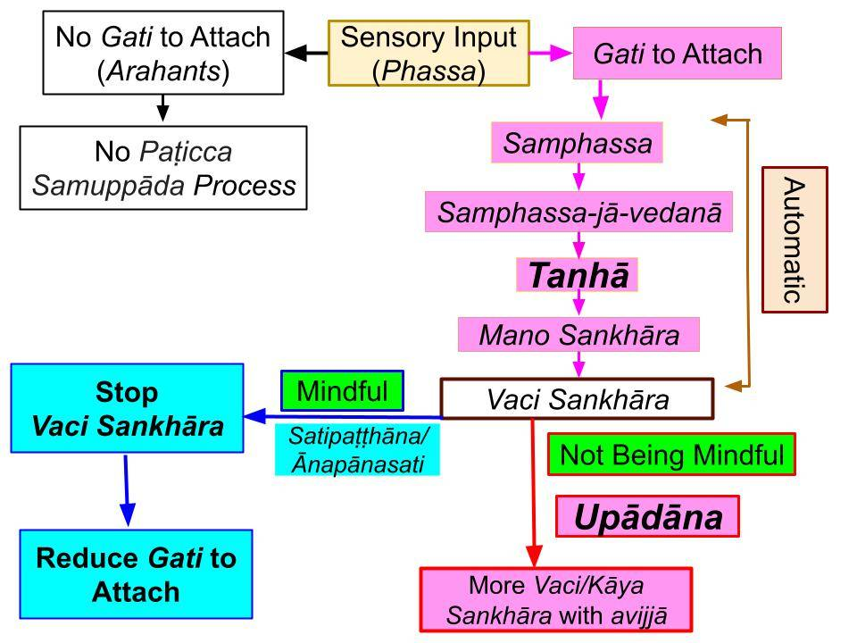

“Phassa paccayā vedanā” in Akusala-Mula Paṭicca Samuppāda processes is really “samphassa paccayā samphassa-jā-vedanā.” That automatically leads to attachment or taṇhā.
Rewritten May 25, 2021; rewritten with new title June 3, 2023
Samphassa Is a "Defiled Contact"
1. In a previous post, we discussed the difference between “phassa” and “samphassa.” See “Difference between Phassa and Samphassa.” To summarize:
- “Phassa” is pure mental contact. It is just seeing, hearing, smelling, tasting, touching, or just an arbitrary thought that comes to the mind without one’s own likes/dislikes. Phassa is a universal cetasika and is present in ALL cittā. Whether it is an average person or an Arahant, sensory contact is made with "phassa."
- However, that sensory contact can turn into a "defiled contact" (samphassa) for an average person. For example, one may walk down the street and see an expensive ring on the road. That initial “seeing” is due to a kamma vipāka; that involves only “phassa.” But now, greedy thoughts arise, and he picks it up and quickly puts it in his pocket. He did that action with “samphassa” ("greedy contact.")
- Thus, the Akusala-Mula Paṭicca samuppāda involves “salāyatana paccayā samphassa,” even though it is usually written as “salāyatana paccayā phassa” in the “uddesa” or “brief” statement.
- Only an Arahant will always have just “phassa” and at no time “samphassa.”
2. Because of that "defiled contact," a "mind-made vedanā" (samphassa-jā-vedanā) can arise in an average person but not in an Arahant.
- If that "mind-made vedanā" is a joyful/pleasant one, then one would instantly attach to that sensory contact with greed.
- If it is an unpleasant vedanā, one will attach with anger/displeasure, for example, when seeing a person disliked.
- One may also attach to a "neutral vedanā" if one is unsure about the nature of that sensory input; that can happen due to avijja or ignorance.
Attachment to a Sensory Input (Taṇhā) Is Instantaneous
3. In all the above cases, attachment is instantaneous, and it is called taṇhā.
- Taṇhā means “getting attached.” The word taṇhā comes from “thán” meaning “place” + “hā” meaning getting fused/welded or attached (හා වීම in Sinhala). Note that “tan” in taṇhā pronounced like in “thunder.” See "Pāli Words – Writing and Pronunciation."
- What do we attach to? We attach to sensory inputs or ārammaṇa.
- Sensory inputs (ārammaṇa) come in through the six sense faculties, possibly leading attachment via rūpa taṇhā, sadda taṇhā through dhamma taṇhā: "Taṇhā Sutta (SN 27.8)." Of course, we don't attach to every sensory input.
4. We attach to specific sensory inputs based on the view/perception that those can provide us happiness (sukha), and thus, they are fruitful (atta) and worthwhile pursuing. We like (icca) to acquire things that can make us happy and want to get rid of those things we dislike; that gives rise to a sense of "nicca nature" about the world.
- But the things we like are based on our gati. If one has a matching gati to attach to a type of ārammaṇa, the attachment happens instantaneously with exposure. It is like a matchstick making contact with the rough surface of a matchbox; the matchstick catches fire instantly.
- That attachment is automatic based on one's anusaya/gati.
- Taṇhā cannot be removed directly by sheer willpower. The key to eliminating taṇhā is gradually reducing our gati to attach to certain types of ārammaṇa.
Reducing Taṇhā Can Only be Done in the Upādāna Stage
5. How do we gradually reduce our gati to attach to such ārammaṇa? The key to reducing such gati lies in the next step of upādāna, which starts with "taṇhā paccayā upādāna."
- Once attached, "knowingly staying attached" to that ārammaṇa is upādāna. This is where we start accumulating abhisaṅkhāra with mano, vaci, and kāya saṅkhāra in that sequence. We become conscious of "being attached" in the early stage of vaci saṅkhāra, where we start "talking to ourselves" without speaking out. See "Correct Meaning of Vacī Sankhāra."
- If we get interested, we may start speaking about it; that also involves vaci saṅkhāra. If that interest builds up, we may take action with kāya saṅkhāra. In other words, we may engage in vaci and kāya saṅkhāra even for hours.
- Unlike the instantaneous step of taṇhā, the mind stays in the "upādāna" stage for a relatively long time.
- By being mindful, we can break that upādāna -- and reduce gati to attach -- which is the key to Ānāpānasati/Satipaṭṭhāna, as outlined in the chart below.

Print/Download: "Taṇhā is Automatic"
"Unwise Gati" Are Cultivated
6. As discussed above, it is an immoral or unwise gati that triggers a sequence of events in rapid succession leading to taṇhā.
- Understanding how various types of gati are formed is critical to understanding Paṭicca samuppāda.
- Even though anusaya moves from birth to birth, various types of gati are cultivated during a lifetime.
- Without the presence of a "gati to attach," taṇhā cannot arise!
- However, until anusaya are eradicated, the possibility of developing gati for various sensory inputs remains. Once such a gati is cultivated, attachment (taṇhā) to the corresponding ārammaṇa is inevitable.
Removal of Gati (By Being Mindful) is the Key to the Eradication of Anusaya/Taṇhā
7. Each time we attach (taṇhā) to ārammaṇa, we strengthen the corresponding gati and associated anusaya. The reverse is true, too: Each time we stop attaching to an ārammaṇa at the upādāna stage, the corresponding gati and anusaya reduce too.
- That is why the cultivation of the Noble Path involves Ānāpānasati/Satipaṭṭhāna.
A Newborn Baby Has Anusaya, but Not Gati
8. A newborn baby does not have any gati. Of course, all types of anusaya are hidden in that baby's mind; different types of anusaya keep changing but remain with a given lifestream.
- As the baby grows and the brain develops, various types of gati are acquired. The types of gati acquired will depend a lot on the environment.
- For example, a child growing up has no interest in drinking alcohol, taking drugs, or getting into fights. However, "gati" to engage in such activities can be acquired within a few months. Let us consider an example.
Cultivation of Gati to Taṇhā
9. Suppose there is a teenager who comes to associate with friends that belong to a street gang. They tell him that one needs to enjoy life and has to do “whatever it takes” to make money to enjoy life. If the parents do not have close contact with the teenager, there is no one to explain the perils of such a way of life, and he embraces this wrong vision or “micchā diṭṭhi.”
- Thus due to ignorance (avijjā), the teenager starts doing things, speaking, and thinking like those gang members: “avijjā paccayā saṅkhāra.”
- Then what occupies his mind most of the time are defiled thoughts (abhisaṅkhāra) and expectations (kamma viññāna) related to gang activities and seeking pleasures by using drugs and alcohol: “saṅkhāra paccayā viññāna.” Thus, a corresponding “defiled mindset” (viññāna) occupies his mind at those times. During gang activities, his thoughts are focused on them, and what is in his subconscious during other times is also related to such activities.
- Now the teenager has acquired a new gati.
10. The cultivation of various types of kamma viññāna is directly related to the cultivation of corresponding gati. As that kamma viññāna grows, the corresponding gati grows too.
- That, in turn, leads to “viññāna paccayā nāmarūpa“. He thinks about and visualizes various gang activities: How to sell drugs to make money and how he will enjoy the rest of the time hanging out with the gang.
- Thus all his six sense faculties become “āyatana“: they all are used to find ways to optimize the gang activities and to think about ways to “have fun”: “nāmarūpa paccayā salāyatana.” Now the gati has matured and is ready to be triggered instantaneously.
- Now, any sensory contact (ārammaṇa) related to a gang activity belongs to “salāyatana paccayā phassa” or, more explicitly, “salāyatana paccayā samphassa.” As discussed above, that leads to samphassa-jā-vedanā and taṇhā automatically.
- Further details in "Difference Between Tanhā and Upādāna."
Gati Can be Broken Only at the Upādāna Stage
11. As further discussed in the post, "Difference Between Tanhā and Upādāna," the "taṇhā paccayā upādāna" is a critical step in Paticca Samuppada.
- Upādāna (“upa” +”ādāna,” where “upa” means “close (to mind)” and “ādāna” means “pull.” Here, it means to "stay on that ārammaṇa" by engaging in more vaci and kāya saṅkhāra.
- That, of course, will lead to further strengthening of the corresponding kamma viññāna and gati!
12. That vicious cycle can be broken only if the teenager understands the dangers of staying on that downward path.
- Someone must explain to him the dire consequences (ādīnava) of continuing such activities.
- It will take a considerable effort to "be mindful" and break such habits (gati.) But that is the only way.
Note: This post replaces the post "Phassa paccayā Vedanā….to Bhava." Don't forget to read the related post, "Difference Between Tanhā and Upādāna."
- The complete series of posts at "Paticca Samuppada in Plain English."